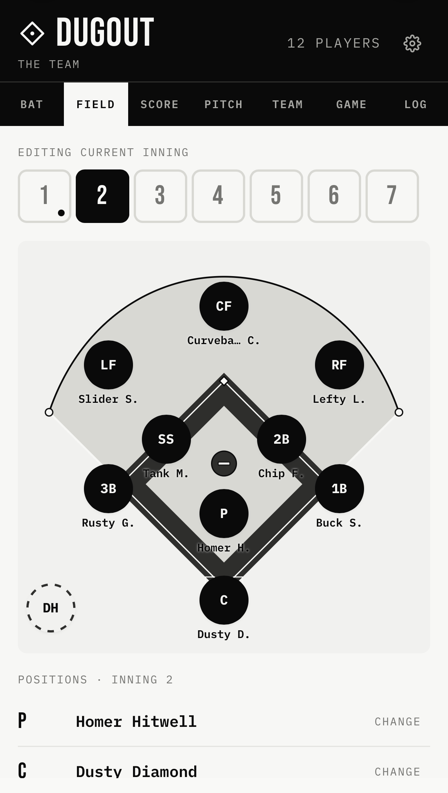

A minimal baseball lineup, scoring, and pitch-count app for iPhone. Built for Little League and youth coaches who want something simpler.
Dugout is a minimal baseball scorekeeper and Little League lineup app for iPhone. It handles the batting order, a tappable linescore, pitch counts per pitcher, a season game log, and per-inning fielding rotations — assign a different defensive lineup to every inning so you can rotate younger players through every position. It also prints: a printable baseball lineup card showing each player's position by inning, two to a page with a fold line so you can tear one off for an assistant coach, plus a printable game summary with the linescore and pitch counts. Dugout is a Progressive Web App: it installs to your iPhone home screen from Safari, runs offline, and needs no account. Made by Backfield, a small software studio, for coaches who want something simpler than GameChanger or TeamSnap for the part of the job that matters in the dugout — keeping score during the game.

Dugout is a small app for people who keep score from the dugout. Set a batting order, track the linescore, count pitches, rotate fielders inning by inning. That's it. No accounts, no syncing, no team management features you don't need.
It's the app a coach with too much to think about already would actually use. Built by someone who keeps score from the dugout himself.
Drag-reorder the batting order. Bench players and swap them in. The lineup card, but you can rearrange it with a thumb.
Tap a position on the diamond, pick a player. Every inning has its own field — rotate beginners through every spot without losing track. A grid view shows who's where across all innings at a glance.
Tappable linescore. Increment runs by half-inning. Balls, strikes, outs. Looks like the scoreboard.
One big tap to count a pitch. Track strikes separately. Switch pitchers when you need to.
The whole game on one screen — scoreboard, lineup, field, and pitch counts. Copy a summary to share, or save it to your log.
Save finished games. Reopen them to edit. Season record. Export to Excel if you want to.
A real lineup card, on paper. The batting order down the side, each player's position by inning across the top, and a small field diagram in the corner. Two identical cards print per page with a fold line between them — fold, tear, and hand one to your assistant. There's a game summary sheet too: final score, linescore by inning, and pitch counts.
Dugout is a Progressive Web App — it runs in your iPhone's browser but you can install it to your home screen so it opens like a native app. There's nothing to download from the App Store, and it works offline.
Dugout will appear on your home screen as a regular app icon. Opens full-screen, works offline, remembers your team between games.
Some things this app does not do, on purpose:
If you need team management, try GameChanger or TeamSnap — they're great at that. Dugout is for the part of the job those apps make harder than it needs to be: actually keeping score during the game.
Free to use. Made by Dan at Backfield, a small studio.